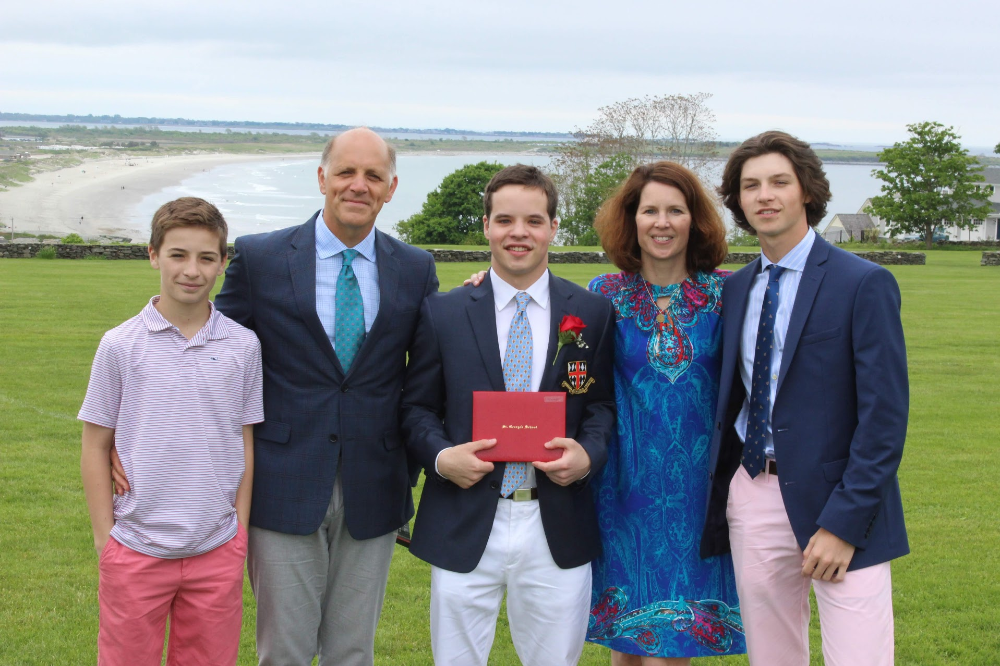

| |
|
|
|---|
Hello, My name is Colin Staples and I am 21-year-old from Middletown, Rhode Island. Since first grade I have lived at St. George's School with my mother, father, and two brothers Luke and Ryan. My brothers are 14 and 18 years old, attending Bishop Hendricken and Bridgton Academy. My parents are both teachers, as my mother is a reading speacilist for elementary school students, and my father is the Director of Operations at St. George's School. I believe the best way to describe my personality is an outgoing,friendly, and well-mannered. I am family-oriented, and take pride in working hard and helping others.
In 2018, I graduated from St. George's High School. St. George's is a boarding school located in Middletown, Rhode Island that is home to students all over the United States and countries such as China, Canada, Mexico, Vietnam, and India, to name a few. Currently, I am a junior at the University of Rhode Island majoring in Supply Chain Management, with a minor in Computer Science. I plan to continue my education after the University of Rhode Island by studying to receive a joint masters in Computer Science and Business Administration. I come from a background of parents and grandparents who all have backgrounds in education, therefore learning has always been very important to me.
During my free time, I enjoy watching and playing sports, spending time with friends and family, and listeining to music. The sports I enjoy include football, baseball, hockey, and basketball. Living in Rhode Island, I am a Celtic, Red Sox, and Bruins fan. Every few years I get the opportunity to travel. Most recently, I have traveled to Italy and Norway with high school groups. While in Italy, I sailed, with a group of students from my high school, from Sicily to Sardinia! I am also a member of a greek organization, and hope to join my universitys Habitat for Humanity club.

Back to Home page .